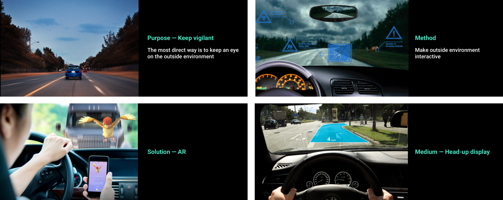
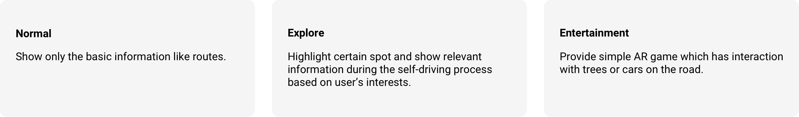
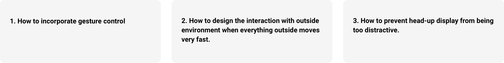

Self-driving Car's Interface
This quick design tries to explore the potential interface for the system in a self-driving car. By interacting with outside environment and show this AR scene via head-up display, we hope to keep driver vigilant even when the car is driven automatically.
- Project Brief
- Design Jam
- Group Project (team of 2)
- My Role
- Project Manager
- UX Designer
- Method & Skills
- Interview
- Storyboard
- Wireframing
- Prototyping
- Tools & Softwares
- Sketch
- Illustrator
- Photoshop
- Invision
Problem
Background
"Automakers are moving more slowly, adding limited autonomy that Delphi says could prevent 80 percent of crashes. There are a few reasons for this, not the least of which is full autonomy is exceedingly difficult and exceedingly expensive. This means a new paradigm is coming: Instead of driving or being driven, you’ll move between the two as conditions warrant. That requires trust and communication—consumers will have to believe the car knows what it’s doing, and that looking away from the road won’t mean looking up from a hospital bed. But it also means remaining vigilant, and ready to take the wheel when necessary."
Target Problem
How to keep the driver remain vigilant while the car is under self-driving mode?
User Research

Research Questions
Q1: When would you wish the car could drive by itself?
Q2: List the situation that you will drive/call a car. (E.g. commute, travel)
Q3: What interests you when you are driving, or when you are looking outside while taking other’s car. (Specify it according to different situations.)
Q4: Why are you interested in them, what kind of information do you want to know?
Findings
- People also want to rest, have entertainment, keep track of other information while they are driving.
- People are interested in different things when they are driving for different purposes.
Here's a digram of things that people may be interested in while they are on a car.


Proposal
Step 1: Make outside environment interactive

Step 2: Create different modes to match user's specific needs.

Quick Prototype
Explore Mode

Entertainment Mode

Challenges

Other Thinkings
When and how to switch between human driving mode and self-driving mode.
a) Preset the system according to driver’s own condition (Novice driver vs Experienced driver).
b) Driver can take over whenever he/she wants during the self-driving process.
Further develop the idea — “vehicle to everything”.
What the following work flow will be like if user decides to go to certain place. For example, will the system provides a menu if the driver truly wants a cup of latte？
Challenges:
1) Scalability problem. Does the system need to preload every menu/category? What if the user wants to go shopping?
2) What do people care most, is it the menu or the time they will spend on that thing?